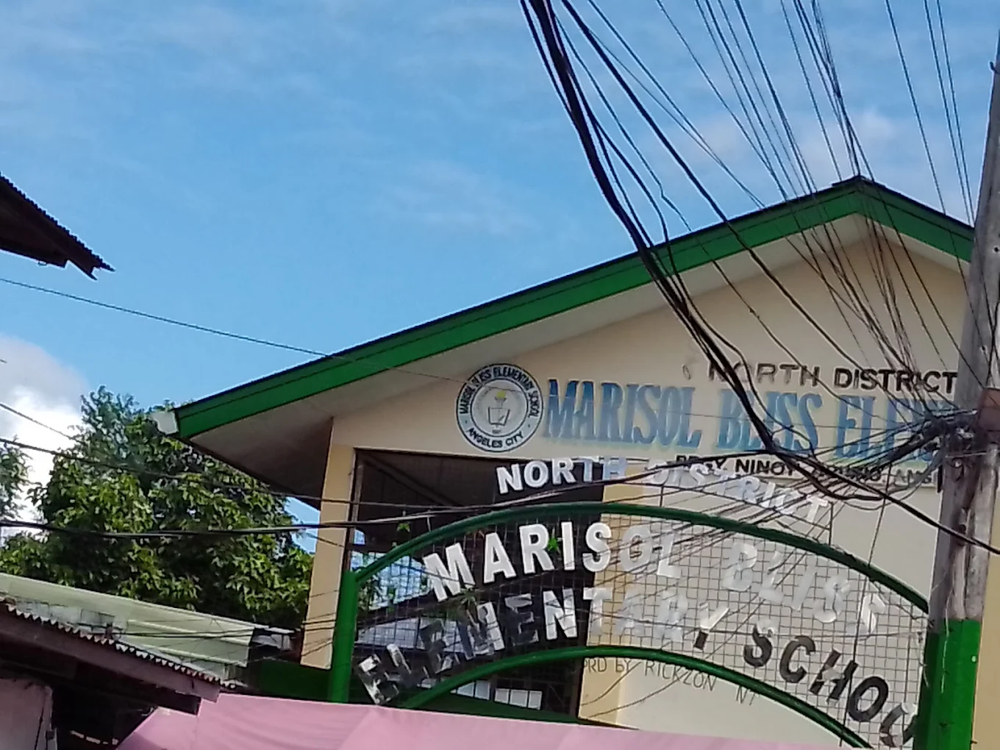
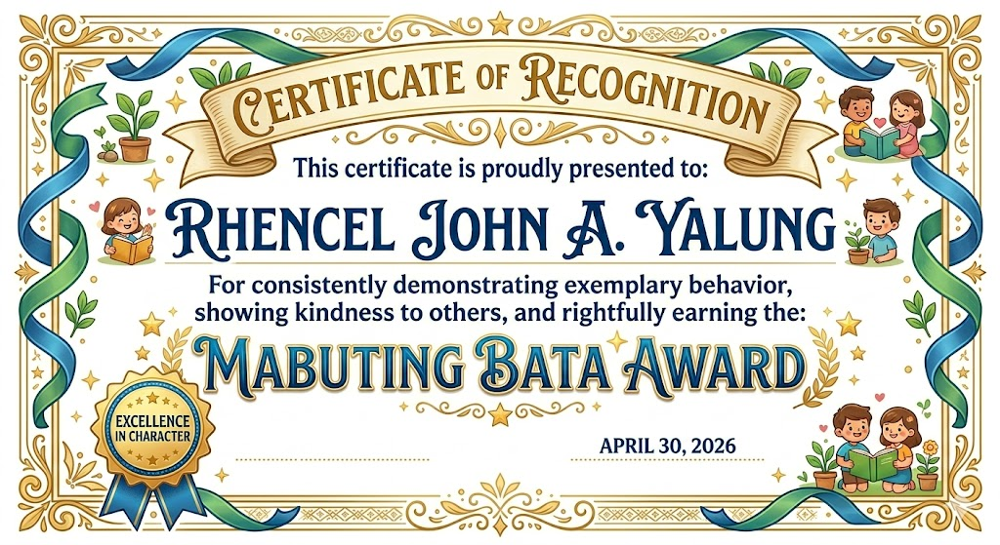
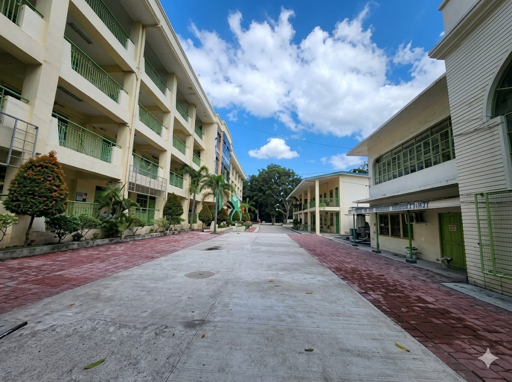
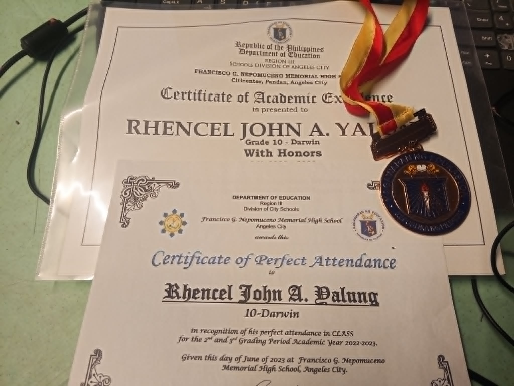
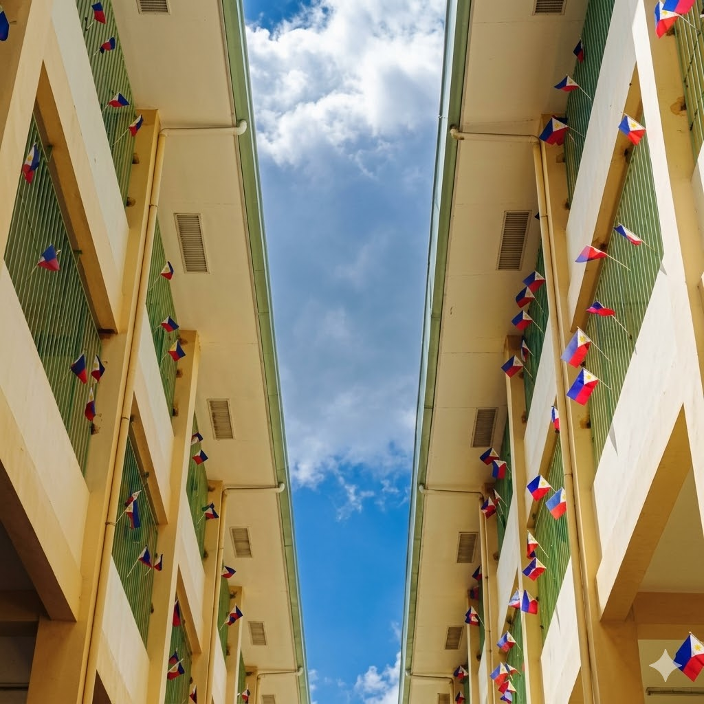
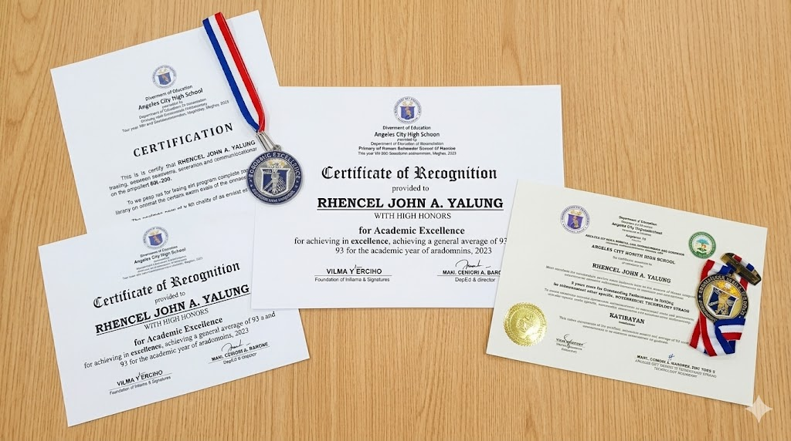
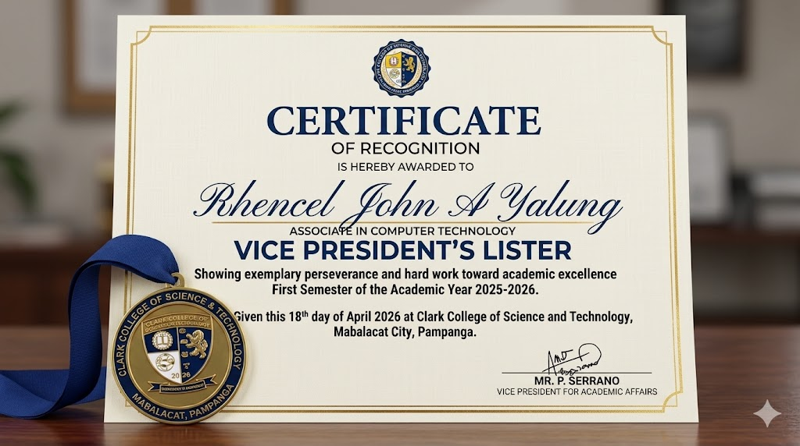

Mabuting Bata Award
Received recognition for Mabuting Student Award for consistent attendance and good performance during elementary school.
My Academic Journey and Achievements

During my elementary years, I was still exploring different things and discovering my interests. Most of the time, I was playful and often got involved in funny and mischievous moments with my classmates, but those experiences helped me enjoy school and create memorable childhood memories.

Received recognition for Mabuting Student Award for consistent attendance and good performance during elementary school.

During junior high school, I improved my communication and teamwork skills. I became more active in school programs and developed responsibility as a student. It was also during this time that my academic spark was awakened, and I achieved my first With Honors recognition around Grade 10. I also became more involved in extracurricular activities, especially dance competitions, where I was able to receive awards and recognition for my performances.


Senior high school helped me discover my passion for technology and programming. I learned web development, animation, and computer-related skills through the ICT strand.

Graduated With High Honors and awarded Best in Work Immersion. Actively participated in a Digital Literacy Program and successfully delivered various ICT projects, specializing in programming and website design.

As a first-year college student at ACT, I continue improving my technical skills and gaining experience. College challenges me to become more independent, hardworking, and goal-oriented.

Achieved Vice President’s Lister during my first year in college at ACT.